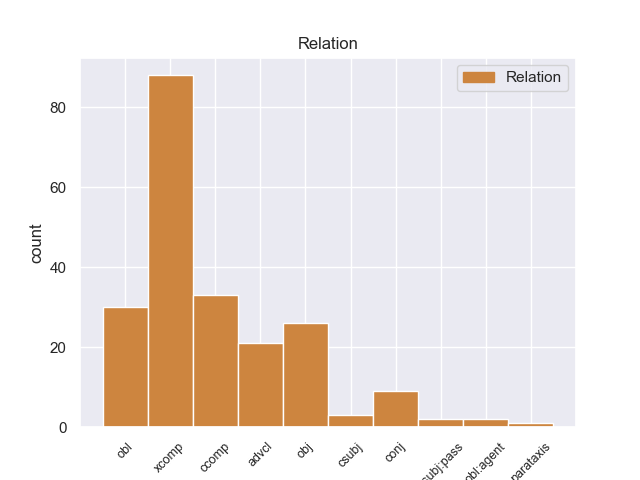
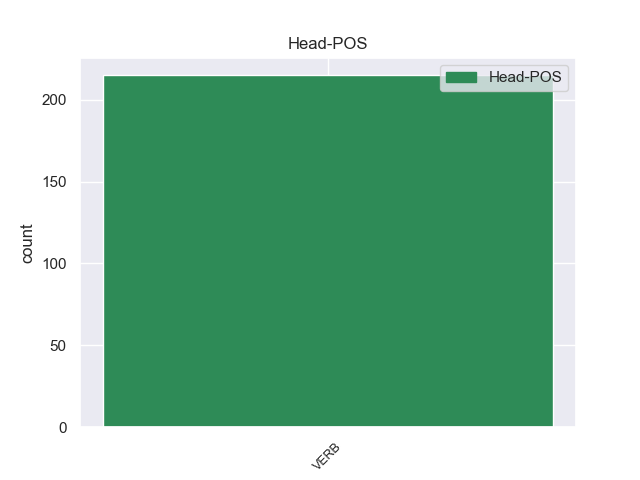
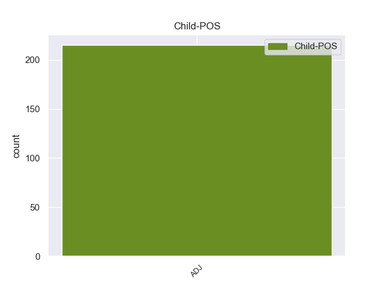

Distribution of features within this leaf



Morphosyntax Rules sorted by frequency.
- When the dependent token is the open clausal complement(xcomp) of the head token, and the head token is VERB and the dependent token is ADJ, the Case needs to be Nom.
1 Σ _ _ _ _ 0 _ _ _
2 την _ _ _ _ 0 _ _ _
3 παρούσα _ _ _ _ 0 _ _ _
4 μορφή _ _ _ _ 0 _ _ _
5 της _ _ _ _ 0 _ _ _
6 , _ _ _ _ 0 _ _ _
7 η _ _ _ _ 0 _ _ _
8 αίτηση _ _ _ _ 0 _ _ _
9 άρσης _ _ _ _ 0 _ _ _
10 της _ _ _ _ 0 _ _ _
11 ασυλίας _ _ _ _ 0 _ _ _
12 παρουσιάζεται παρουσιάζω VERB VERB Aspect=Imp|Mood=Ind|Number=Sing|Person=3|Tense=Pres|VerbForm=Fin|Voice=Pass 0 _ _ _
13 απαράδεκτα _ _ _ _ 0 _ _ _
14 ασαφής ασαφής ADJ ADJ Case=Nom|Gender=Masc|Number=Sing 12 xcomp _ SpaceAfter=No
15 . _ _ _ _ 0 _ _ _
1 Επιθυμώ _ _ _ _ 0 _ _ _
2 , _ _ _ _ 0 _ _ _
3 καταρχάς _ _ _ _ 0 _ _ _
4 , _ _ _ _ 0 _ _ _
5 να _ _ _ _ 0 _ _ _
6 δηλώσω δηλώνω VERB VERB Aspect=Perf|Mood=Ind|Number=Sing|Person=1|VerbForm=Fin|Voice=Act 0 _ _ _
7 ότι _ _ _ _ 0 _ _ _
8 οι _ _ _ _ 0 _ _ _
9 κατηγορίες _ _ _ _ 0 _ _ _
10 οι _ _ _ _ 0 _ _ _
11 οποίες _ _ _ _ 0 _ _ _
12 βαρύνουν _ _ _ _ 0 _ _ _
13 τους _ _ _ _ 0 _ _ _
14 εν _ _ _ _ 0 _ _ _
15 λόγω _ _ _ _ 0 _ _ _
16 βουλευτές _ _ _ _ 0 _ _ _
17 είναι _ _ _ _ 0 _ _ _
18 σοβαρές σοβαρός ADJ ADJ Case=Nom|Gender=Fem|Number=Plur 6 ccomp _ SpaceAfter=No
19 . _ _ _ _ 0 _ _ _
1 Δυστυχώς _ _ _ _ 0 _ _ _
2 τα _ _ _ _ 0 _ _ _
3 φύλλα _ _ _ _ 0 _ _ _
4 του _ _ _ _ 0 _ _ _
5 Τύπου _ _ _ _ 0 _ _ _
6 γεμίζουν _ _ _ _ 0 _ _ _
7 πάντα _ _ _ _ 0 _ _ _
8 με _ _ _ _ 0 _ _ _
9 οτιδήποτε _ _ _ _ 0 _ _ _
10 δεν _ _ _ _ 0 _ _ _
11 πάει _ _ _ _ 0 _ _ _
12 καλά _ _ _ _ 0 _ _ _
13 σ _ _ _ _ 0 _ _ _
14 την _ _ _ _ 0 _ _ _
15 Ευρώπη _ _ _ _ 0 _ _ _
16 και _ _ _ _ 0 _ _ _
17 όταν _ _ _ _ 0 _ _ _
18 η _ _ _ _ 0 _ _ _
19 πολιτική _ _ _ _ 0 _ _ _
20 μας _ _ _ _ 0 _ _ _
21 είναι _ _ _ _ 0 _ _ _
22 επιτυχής επιτυχής ADJ ADJ Case=Nom|Gender=Fem|Number=Sing 24 advcl _ _
23 δεν _ _ _ _ 0 _ _ _
24 αναφέρεται αναφέρω VERB VERB Aspect=Imp|Mood=Ind|Number=Sing|Person=3|Tense=Pres|VerbForm=Fin|Voice=Pass 0 _ _ _
25 σχεδόν _ _ _ _ 0 _ _ _
26 καθόλου _ _ _ _ 0 _ _ _
27 . _ _ _ _ 0 _ _ _
1 Αυτό _ _ _ _ 0 _ _ _
2 μπορεί μπορώ VERB VERB Aspect=Imp|Mood=Ind|Number=Sing|Person=3|Tense=Pres|VerbForm=Fin|Voice=Act 0 _ _ _
3 να _ _ _ _ 0 _ _ _
4 μην _ _ _ _ 0 _ _ _
5 οδηγήσει _ _ _ _ 0 _ _ _
6 σ _ _ _ _ 0 _ _ _
7 τη _ _ _ _ 0 _ _ _
8 λήξη _ _ _ _ 0 _ _ _
9 του _ _ _ _ 0 _ _ _
10 εν _ _ _ _ 0 _ _ _
11 λόγω _ _ _ _ 0 _ _ _
12 ζητήματος _ _ _ _ 0 _ _ _
13 αλλά _ _ _ _ 0 _ _ _
14 , _ _ _ _ 0 _ _ _
15 σ _ _ _ _ 0 _ _ _
16 τη _ _ _ _ 0 _ _ _
17 μορφή _ _ _ _ 0 _ _ _
18 υπό _ _ _ _ 0 _ _ _
19 την _ _ _ _ 0 _ _ _
20 οποία _ _ _ _ 0 _ _ _
21 την _ _ _ _ 0 _ _ _
22 λάβαμε _ _ _ _ 0 _ _ _
23 , _ _ _ _ 0 _ _ _
24 αυτή _ _ _ _ 0 _ _ _
25 η _ _ _ _ 0 _ _ _
26 αίτηση _ _ _ _ 0 _ _ _
27 άρσης _ _ _ _ 0 _ _ _
28 της _ _ _ _ 0 _ _ _
29 ασυλίας _ _ _ _ 0 _ _ _
30 ήταν _ _ _ _ 0 _ _ _
31 , _ _ _ _ 0 _ _ _
32 κατά _ _ _ _ 0 _ _ _
33 την _ _ _ _ 0 _ _ _
34 άποψη _ _ _ _ 0 _ _ _
35 της _ _ _ _ 0 _ _ _
36 Επιτροπής _ _ _ _ 0 _ _ _
37 Νομικών _ _ _ _ 0 _ _ _
38 Θεμάτων _ _ _ _ 0 _ _ _
39 , _ _ _ _ 0 _ _ _
40 απαράδεκτη απαράδεκτος ADJ ADJ Case=Nom|Gender=Fem|Number=Sing 2 conj _ SpaceAfter=No
41 , _ _ _ _ 0 _ _ _
42 άποψη _ _ _ _ 0 _ _ _
43 την _ _ _ _ 0 _ _ _
44 οποία _ _ _ _ 0 _ _ _
45 συνιστώ _ _ _ _ 0 _ _ _
46 σ _ _ _ _ 0 _ _ _
47 το _ _ _ _ 0 _ _ _
48 Σώμα _ _ _ _ 0 _ _ _
49 να _ _ _ _ 0 _ _ _
50 υιοθετήσει _ _ _ _ 0 _ _ _
51 . _ _ _ _ 0 _ _ _
1 Τελευταίο τελευταίος ADJ ADJ Case=Nom|Gender=Neut|Number=Sing 12 obl _ SpaceAfter=No
2 , _ _ _ _ 0 _ _ _
3 αλλά _ _ _ _ 0 _ _ _
4 όχι _ _ _ _ 0 _ _ _
5 λιγότερο _ _ _ _ 0 _ _ _
6 σημαντικό _ _ _ _ 0 _ _ _
7 , _ _ _ _ 0 _ _ _
8 το _ _ _ _ 0 _ _ _
9 γενικό _ _ _ _ 0 _ _ _
10 καθεστώς _ _ _ _ 0 _ _ _
11 δεν _ _ _ _ 0 _ _ _
12 προσφέρει προσφέρω VERB VERB Aspect=Imp|Mood=Ind|Number=Sing|Person=3|Tense=Pres|VerbForm=Fin|Voice=Act 0 _ _ _
13 διατάξεις _ _ _ _ 0 _ _ _
14 που _ _ _ _ 0 _ _ _
15 είναι _ _ _ _ 0 _ _ _
16 ζωτικής _ _ _ _ 0 _ _ _
17 σημασίας _ _ _ _ 0 _ _ _
18 σ _ _ _ _ 0 _ _ _
19 τον _ _ _ _ 0 _ _ _
20 τομέα _ _ _ _ 0 _ _ _
21 του _ _ _ _ 0 _ _ _
22 αυτοκινήτου _ _ _ _ 0 _ _ _
23 για _ _ _ _ 0 _ _ _
24 να _ _ _ _ 0 _ _ _
25 διασφαλίσει _ _ _ _ 0 _ _ _
26 τα _ _ _ _ 0 _ _ _
27 οφέλη _ _ _ _ 0 _ _ _
28 για _ _ _ _ 0 _ _ _
29 τον _ _ _ _ 0 _ _ _
30 καταναλωτή _ _ _ _ 0 _ _ _
31 . _ _ _ _ 0 _ _ _
1 Δεν _ _ _ _ 0 _ _ _
2 μπορεί μπορώ VERB VERB Aspect=Imp|Mood=Ind|Number=Sing|Person=3|Tense=Pres|VerbForm=Fin|Voice=Act 0 _ _ _
3 να _ _ _ _ 0 _ _ _
4 είναι _ _ _ _ 0 _ _ _
5 λογικό λογικός ADJ ADJ Case=Nom|Gender=Neut|Number=Sing 2 csubj _ _
6 να _ _ _ _ 0 _ _ _
7 πρέπει _ _ _ _ 0 _ _ _
8 να _ _ _ _ 0 _ _ _
9 μαζέψουμε _ _ _ _ 0 _ _ _
10 70 _ _ _ _ 0 _ _ _
11 τροποποιήσεις _ _ _ _ 0 _ _ _
12 προκειμένου _ _ _ _ 0 _ _ _
13 να _ _ _ _ 0 _ _ _
14 ασχοληθούμε _ _ _ _ 0 _ _ _
15 με _ _ _ _ 0 _ _ _
16 ένα _ _ _ _ 0 _ _ _
17 ψάρι _ _ _ _ 0 _ _ _
18 από _ _ _ _ 0 _ _ _
19 νομική _ _ _ _ 0 _ _ _
20 άποψη _ _ _ _ 0 _ _ _
21 . _ _ _ _ 0 _ _ _
1 Μέχρι _ _ _ _ 0 _ _ _
2 τώρα _ _ _ _ 0 _ _ _
3 , _ _ _ _ 0 _ _ _
4 τα _ _ _ _ 0 _ _ _
5 αίτια _ _ _ _ 0 _ _ _
6 του _ _ _ _ 0 _ _ _
7 δυστυχήματος _ _ _ _ 0 _ _ _
8 παραμένουν _ _ _ _ 0 _ _ _
9 άγνωστα _ _ _ _ 0 _ _ _
10 , _ _ _ _ 0 _ _ _
11 ενώ _ _ _ _ 0 _ _ _
12 δηλώθηκε δηλώνω VERB VERB Aspect=Perf|Mood=Ind|Number=Sing|Person=3|Tense=Past|VerbForm=Fin|Voice=Pass 0 _ _ _
13 ότι _ _ _ _ 0 _ _ _
14 το _ _ _ _ 0 _ _ _
15 λεωφορείο _ _ _ _ 0 _ _ _
16 , _ _ _ _ 0 _ _ _
17 σ _ _ _ _ 0 _ _ _
18 το _ _ _ _ 0 _ _ _
19 οποίο _ _ _ _ 0 _ _ _
20 είχαν _ _ _ _ 0 _ _ _
21 μεταβεί _ _ _ _ 0 _ _ _
22 τα _ _ _ _ 0 _ _ _
23 θύματα _ _ _ _ 0 _ _ _
24 , _ _ _ _ 0 _ _ _
25 ήταν _ _ _ _ 0 _ _ _
26 καινούργιο καινούργιος ADJ ADJ Case=Nom|Gender=Neut|Number=Sing 12 csubj:pass _ _
27 και _ _ _ _ 0 _ _ _
28 πως _ _ _ _ 0 _ _ _
29 εκείνη _ _ _ _ 0 _ _ _
30 την _ _ _ _ 0 _ _ _
31 ώρα _ _ _ _ 0 _ _ _
32 σ _ _ _ _ 0 _ _ _
33 το _ _ _ _ 0 _ _ _
34 τούνελ _ _ _ _ 0 _ _ _
35 δεν _ _ _ _ 0 _ _ _
36 υπήρχε _ _ _ _ 0 _ _ _
37 πολλή _ _ _ _ 0 _ _ _
38 κίνηση _ _ _ _ 0 _ _ _
39 . _ _ _ _ 0 _ _ _
1 Αν _ _ _ _ 0 _ _ _
2 και _ _ _ _ 0 _ _ _
3 δεν _ _ _ _ 0 _ _ _
4 πρέπει _ _ _ _ 0 _ _ _
5 να _ _ _ _ 0 _ _ _
6 υπερεκτιμούμε _ _ _ _ 0 _ _ _
7 την _ _ _ _ 0 _ _ _
8 κατάσταση _ _ _ _ 0 _ _ _
9 , _ _ _ _ 0 _ _ _
10 η _ _ _ _ 0 _ _ _
11 σχέση _ _ _ _ 0 _ _ _
12 του _ _ _ _ 0 _ _ _
13 Κοινοβουλίου _ _ _ _ 0 _ _ _
14 με _ _ _ _ 0 _ _ _
15 την _ _ _ _ 0 _ _ _
16 Επιτροπή _ _ _ _ 0 _ _ _
17 και _ _ _ _ 0 _ _ _
18 το _ _ _ _ 0 _ _ _
19 Συμβούλιο _ _ _ _ 0 _ _ _
20 έχει _ _ _ _ 0 _ _ _
21 ήδη _ _ _ _ 0 _ _ _
22 βελτιωθεί _ _ _ _ 0 _ _ _
23 και _ _ _ _ 0 _ _ _
24 - _ _ _ _ 0 _ _ _
25 ίσως _ _ _ _ 0 _ _ _
26 πιο _ _ _ _ 0 _ _ _
27 σημαντικό σημαντικός ADJ ADJ Case=Nom|Gender=Neut|Number=Sing 30 parataxis _ _
28 - _ _ _ _ 0 _ _ _
29 έχετε _ _ _ _ 0 _ _ _
30 δείξει δείχνω VERB VERB Aspect=Perf|VerbForm=Inf|Voice=Act 0 _ _ _
31 ότι _ _ _ _ 0 _ _ _
32 έχετε _ _ _ _ 0 _ _ _
33 τη _ _ _ _ 0 _ _ _
34 θέληση _ _ _ _ 0 _ _ _
35 να _ _ _ _ 0 _ _ _
36 λάβετε _ _ _ _ 0 _ _ _
37 σκληρές _ _ _ _ 0 _ _ _
38 αποφάσεις _ _ _ _ 0 _ _ _
39 . _ _ _ _ 0 _ _ _
non-conforming Examples:
1 Πηγάζει πηγάζω VERB VERB Aspect=Imp|Mood=Ind|Number=Sing|Person=3|Tense=Pres|VerbForm=Fin|Voice=Act 0 _ _ _
2 από _ _ _ _ 0 _ _ _
3 τα _ _ _ _ 0 _ _ _
4 ορεινά ορεινός ADJ ADJ Case=Acc|Gender=Neut|Number=Plur 1 obl _ _
5 του _ _ _ _ 0 _ _ _
6 Νομού _ _ _ _ 0 _ _ _
7 Ιωαννίνων _ _ _ _ 0 _ _ _
8 και _ _ _ _ 0 _ _ _
9 έπειτα _ _ _ _ 0 _ _ _
10 από _ _ _ _ 0 _ _ _
11 διαδρομή _ _ _ _ 0 _ _ _
12 64 _ _ _ _ 0 _ _ _
13 χιλιομέτρων _ _ _ _ 0 _ _ _
14 εκβάλλει _ _ _ _ 0 _ _ _
15 σ _ _ _ _ 0 _ _ _
16 το _ _ _ _ 0 _ _ _
17 Ιόνιο _ _ _ _ 0 _ _ _
18 Πέλαγος _ _ _ _ 0 _ _ _
19 . _ _ _ _ 0 _ _ _
1 Αποτελεί _ _ _ _ 0 _ _ _
2 πρόκληση _ _ _ _ 0 _ _ _
3 για _ _ _ _ 0 _ _ _
4 όλους _ _ _ _ 0 _ _ _
5 εμάς _ _ _ _ 0 _ _ _
6 - _ _ _ _ 0 _ _ _
7 το _ _ _ _ 0 _ _ _
8 Κοινοβούλιο _ _ _ _ 0 _ _ _
9 , _ _ _ _ 0 _ _ _
10 την _ _ _ _ 0 _ _ _
11 Επιτροπή _ _ _ _ 0 _ _ _
12 και _ _ _ _ 0 _ _ _
13 το _ _ _ _ 0 _ _ _
14 Συμβούλιο _ _ _ _ 0 _ _ _
15 - _ _ _ _ 0 _ _ _
16 να _ _ _ _ 0 _ _ _
17 θεσπίσουμε θεσπίζω VERB VERB Aspect=Perf|Mood=Ind|Number=Plur|Person=1|VerbForm=Fin|Voice=Act 0 _ _ _
18 αυτά _ _ _ _ 0 _ _ _
19 τα _ _ _ _ 0 _ _ _
20 εχέγγυα εχέγγυος ADJ ADJ Case=Acc|Gender=Neut|Number=Plur 17 obj _ SpaceAfter=No
21 , _ _ _ _ 0 _ _ _
22 διότι _ _ _ _ 0 _ _ _
23 είναι _ _ _ _ 0 _ _ _
24 δύσκολο _ _ _ _ 0 _ _ _
25 να _ _ _ _ 0 _ _ _
26 εξακολουθήσουμε _ _ _ _ 0 _ _ _
27 να _ _ _ _ 0 _ _ _
28 συμφωνούμε _ _ _ _ 0 _ _ _
29 ώσπου _ _ _ _ 0 _ _ _
30 να _ _ _ _ 0 _ _ _
31 τα _ _ _ _ 0 _ _ _
32 αποκτήσουμε _ _ _ _ 0 _ _ _
33 . _ _ _ _ 0 _ _ _
1 Επιπλέον _ _ _ _ 0 _ _ _
2 , _ _ _ _ 0 _ _ _
3 θεωρούμε θεωρώ VERB VERB Aspect=Imp|Mood=Ind|Number=Plur|Person=1|Tense=Pres|VerbForm=Fin|Voice=Act 0 _ _ _
4 αυτά _ _ _ _ 0 _ _ _
5 τα _ _ _ _ 0 _ _ _
6 μέσα _ _ _ _ 0 _ _ _
7 ως _ _ _ _ 0 _ _ _
8 δικά δικός ADJ ADJ Case=Acc|Gender=Neut|Number=Plur 3 obl _ _
9 μας _ _ _ _ 0 _ _ _
10 , _ _ _ _ 0 _ _ _
11 επειδή _ _ _ _ 0 _ _ _
12 αυτό _ _ _ _ 0 _ _ _
13 το _ _ _ _ 0 _ _ _
14 Κοινοβούλιο _ _ _ _ 0 _ _ _
15 - _ _ _ _ 0 _ _ _
16 όπως _ _ _ _ 0 _ _ _
17 εσείς _ _ _ _ 0 _ _ _
18 υπενθυμίσατε _ _ _ _ 0 _ _ _
19 - _ _ _ _ 0 _ _ _
20 εργάστηκε _ _ _ _ 0 _ _ _
21 πολύ _ _ _ _ 0 _ _ _
22 για _ _ _ _ 0 _ _ _
23 την _ _ _ _ 0 _ _ _
24 επίτευξή _ _ _ _ 0 _ _ _
25 τους _ _ _ _ 0 _ _ _
26 . _ _ _ _ 0 _ _ _
1 Ο _ _ _ _ 0 _ _ _
2 Αντιπρόεδρος _ _ _ _ 0 _ _ _
3 των _ _ _ _ 0 _ _ _
4 ΗΠΑ _ _ _ _ 0 _ _ _
5 , _ _ _ _ 0 _ _ _
6 Τζο _ _ _ _ 0 _ _ _
7 Μπάιντεν _ _ _ _ 0 _ _ _
8 , _ _ _ _ 0 _ _ _
9 συναντήθηκε συναντώ VERB VERB Aspect=Perf|Mood=Ind|Number=Sing|Person=3|Tense=Past|VerbForm=Fin|Voice=Pass 0 _ _ _
10 σ _ _ _ _ 0 _ _ _
11 το _ _ _ _ 0 _ _ _
12 Καπιτώλιο _ _ _ _ 0 _ _ _
13 με _ _ _ _ 0 _ _ _
14 τους _ _ _ _ 0 _ _ _
15 Δημοκρατικούς δημοκρατικός ADJ ADJ Case=Acc|Gender=Masc|Number=Plur 9 obl _ _
16 της _ _ _ _ 0 _ _ _
17 Γερουσίας _ _ _ _ 0 _ _ _
18 αργά _ _ _ _ 0 _ _ _
19 τη _ _ _ _ 0 _ _ _
20 Δευτέρα _ _ _ _ 0 _ _ _
21 το _ _ _ _ 0 _ _ _
22 βράδυ _ _ _ _ 0 _ _ _
23 καθώς _ _ _ _ 0 _ _ _
24 άρχισαν _ _ _ _ 0 _ _ _
25 να _ _ _ _ 0 _ _ _
26 διαρρέουν _ _ _ _ 0 _ _ _
27 πληροφορίες _ _ _ _ 0 _ _ _
28 για _ _ _ _ 0 _ _ _
29 επικείμενη _ _ _ _ 0 _ _ _
30 συμφωνία _ _ _ _ 0 _ _ _
31 . _ _ _ _ 0 _ _ _
1 Επίσης _ _ _ _ 0 _ _ _
2 θετική θετικός ADJ ADJ Case=Acc|Gender=Fem|Number=Sing 3 xcomp _ _
3 θεωρώ θεωρώ VERB VERB Aspect=Imp|Mood=Ind|Number=Sing|Person=1|Tense=Pres|VerbForm=Fin|Voice=Act 0 _ _ _
4 την _ _ _ _ 0 _ _ _
5 υπόσχεση _ _ _ _ 0 _ _ _
6 ότι _ _ _ _ 0 _ _ _
7 μετά _ _ _ _ 0 _ _ _
8 από _ _ _ _ 0 _ _ _
9 την _ _ _ _ 0 _ _ _
10 περιορισμένη _ _ _ _ 0 _ _ _
11 δέσμη _ _ _ _ 0 _ _ _
12 μέτρων _ _ _ _ 0 _ _ _
13 που _ _ _ _ 0 _ _ _
14 θεσπίσθηκε _ _ _ _ 0 _ _ _
15 πριν _ _ _ _ 0 _ _ _
16 από _ _ _ _ 0 _ _ _
17 μερικές _ _ _ _ 0 _ _ _
18 εβδομάδες _ _ _ _ 0 _ _ _
19 για _ _ _ _ 0 _ _ _
20 την _ _ _ _ 0 _ _ _
21 υλοποίηση _ _ _ _ 0 _ _ _
22 της _ _ _ _ 0 _ _ _
23 αναθεώρησης _ _ _ _ 0 _ _ _
24 του _ _ _ _ 0 _ _ _
25 συντάγματος _ _ _ _ 0 _ _ _
26 θα _ _ _ _ 0 _ _ _
27 ακολουθήσει _ _ _ _ 0 _ _ _
28 και _ _ _ _ 0 _ _ _
29 μια _ _ _ _ 0 _ _ _
30 επόμενη _ _ _ _ 0 _ _ _
31 δέσμη _ _ _ _ 0 _ _ _
32 νομοθετικών _ _ _ _ 0 _ _ _
33 μέτρων _ _ _ _ 0 _ _ _
34 με _ _ _ _ 0 _ _ _
35 το _ _ _ _ 0 _ _ _
36 ίδιο _ _ _ _ 0 _ _ _
37 αντικείμενο _ _ _ _ 0 _ _ _
38 όπου _ _ _ _ 0 _ _ _
39 , _ _ _ _ 0 _ _ _
40 μεταξύ _ _ _ _ 0 _ _ _
41 άλλων _ _ _ _ 0 _ _ _
42 , _ _ _ _ 0 _ _ _
43 θα _ _ _ _ 0 _ _ _
44 συμπεριλαμβάνονται _ _ _ _ 0 _ _ _
45 ο _ _ _ _ 0 _ _ _
46 νόμος _ _ _ _ 0 _ _ _
47 για _ _ _ _ 0 _ _ _
48 τον _ _ _ _ 0 _ _ _
49 Τύπο _ _ _ _ 0 _ _ _
50 , _ _ _ _ 0 _ _ _
51 ο _ _ _ _ 0 _ _ _
52 νόμος _ _ _ _ 0 _ _ _
53 για _ _ _ _ 0 _ _ _
54 την _ _ _ _ 0 _ _ _
55 ελευθερία _ _ _ _ 0 _ _ _
56 του _ _ _ _ 0 _ _ _
57 συναθροίζεσθαι _ _ _ _ 0 _ _ _
58 , _ _ _ _ 0 _ _ _
59 το _ _ _ _ 0 _ _ _
60 ποινικό _ _ _ _ 0 _ _ _
61 δίκαιο _ _ _ _ 0 _ _ _
62 , _ _ _ _ 0 _ _ _
63 καθώς _ _ _ _ 0 _ _ _
64 και _ _ _ _ 0 _ _ _
65 ο _ _ _ _ 0 _ _ _
66 νόμος _ _ _ _ 0 _ _ _
67 για _ _ _ _ 0 _ _ _
68 τις _ _ _ _ 0 _ _ _
69 αρμοδιότητες _ _ _ _ 0 _ _ _
70 της _ _ _ _ 0 _ _ _
71 αστυνομίας _ _ _ _ 0 _ _ _
72 . _ _ _ _ 0 _ _ _